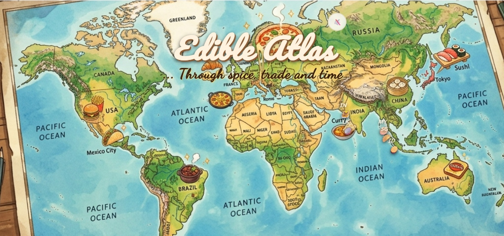
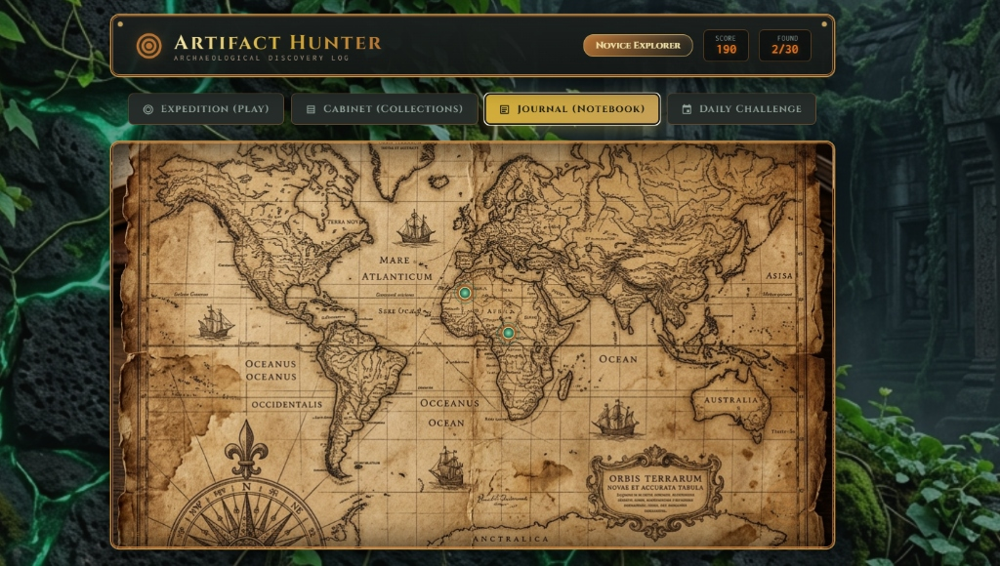

Swathi Moorthy
Indian journalist writing about technology, business and culture.
I am an engineer-turned-journalist who fell in love with words over code. Currently, I cover artificial intelligence for The Economic Times, India's leading business news platform. I focus on the intersection of AI and its impact on business, startups, venture capital, and society.
From the Field
View All →
Over 100 Indian AI startup founders moving to US for funds and talent
More than 100 Indian AI founders have moved or are preparing to move to the US, drawn by closer access to customers, capital and the most advanced AI ecosystems.

Reinvention will keep Cursor on the map, says cofounder Aman Sanger
India is the second or third largest market for Cursor and the company is planning a big push into Indian enterprises.

The great Indic data hunt
The race to build Indic models has heated up, but the challenge over availability of Indic language data persists.

Vibe coding gets a big reality check
Vibe coding startups are riding high on easy app creation via prompts, but questions grow over their long-term viability.
AI Anecdotes
View All →
I tried to outrun code. Then AI caught up
I begrudgingly started to build software applications as an experiment to better understand AI. Now, it has become a lot more.

The Vending Machine Coup
The second phase of Anthropic's vending machine experiment has interesting results, and of course goof-ups.

How easy is it to vibe code an app? It’s not that straightforward
The barrier to coding has eased with AI, but the learning curve is still steep.

The Second-Project Slump is Real
While raw enthusiasm got me through my first app, it took a love for food and history to get my second across the finish line.
Conversations

Stuart Russell and Yoshua Benjio on Why AI Could Make us Irrelevant, then Extinct
The existential alignment problem sits at the heart of the AI revolution - and the consequences of getting it wrong could be irreversible.

Wendy Hall: One Woman's Voice in a Room Full of AI Tech Bros
She shares rooms and stages with the gods of AI...and is often the only woman there. Dame Wendy Hall on why "AGI" is meaningless hype.

India AI Impact Summit: Vinod Khosla on Why 2047 Could Free Every Indian
What if every Indian had a personal doctor, a PhD agronomist, and a world-class tutor all free, all AI-powered, available tomorrow?

ET In The Valley: Arvind Jain, Co-Founder And CEO Of Glean
Arvind Jain couldn't find his own company's data at Rubrik. So in 2019, he built Glean, the first enterprise generative AI company.
Elsewhere
View All →


Lab
Edible Atlas
An interactive story-driven application that takes you on a culinary exploration journey.
View Source
Artifact Hunter
A browser-based adventure game where you hunt for hidden artifacts across mysterious landscapes.
Play GameWhat I am reading

The New Geography of Innovation
by Mehran Gul
The global contest for breakthrough technologies and how the world's innovation hubs are shifting.

The Philosopher in the Valley
by Michael Steinberger
Alex Karp, Palantir, and the Rise of the Surveillance State.